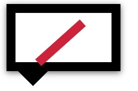
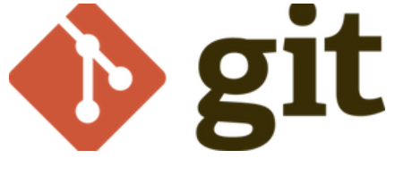
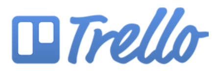
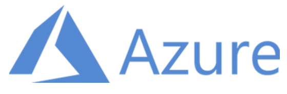
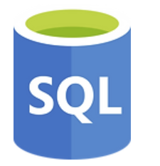
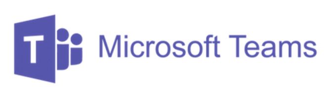

Build School
/*我們的理念*/
Build = 將程式碼編譯及建置成可執行的軟體
Build = 動手做
Build = 軟體開發職涯的打造者
實作及就業導向的軟體開發學校
因應數位新時代的來臨，軟體、App、IoT 、SaaS、雲端平台的應用需求大爆炸，軟體工程師的招募需求持續上升，以2016年5月求職平台的統計資料，從高科技、電商、金融、傳產、網路服務、軟體資訊、新創等各行業，台灣至少有 27,000 位軟體開發工程師的職缺，甚至日本、新加坡等軟體及App 外商也來台灣求才。
為了彌補企業求才所需技能及實務教學上的落差，我們希望能幫助想搭上軟體開發及數位經濟這艘火箭的學員們，打造更有競爭力的職涯!
打造專案作品的學習方式
(Project-based Learning)
透過身經百戰的實務講師、各大企業的資深軟體工程師或CTO，帶領學員實作一個真正能運作的產品開發，解決真實世界的問題，透過專題過程中的實作，培養解決問題的能力，這裏不只是程式教學或教育訓練，學的不只是技能，而是 Learn how to learn，以因應變化多端的軟體開發技能，及自主尋找解答的能力。

動手實作才是真學習

就業銜接
真正企業職場所需技能
(Career Readiness)
除了透過打造專題作品過程，學到了技術及硬技能外，不同於一般的軟體培訓，我們更加入了簡報技巧、履歷及面試準備、以及真正軟體開發的團隊溝通及運作，這些軟實力 (Soft-Skill) 的培養，讓學員能提早做好準備，在職場上成為一位專業的軟體工程師!
企業導師的連結
(Mentor Network)
每一位在軟體開發上有實務經驗的企業導師，他們是各大企業的主管、資深軟體工程師或 CTO，其人際連結及資源將帶給同學更多更好的就業機會，你將比別人站得更高，看得更遠!

連結及影響力
第 1 - 4 個月
程式基礎教學
- 業界實戰講師 企業主管/創業家/CTO 演講
第 5 - 6 個月
專案及作品導向實作
- Web / App 作品開發 - 企業導師指導
- 不只是 Demo - 真實可運作成果
- 團隊開發 - 真實軟體開發團隊的運作及分工 (Agile敏捷, kanban 看板, CI 自動化建置)
第 6 - 7 個月
作品發表
- 簡報 Demo 及溝通技巧
- 作品及程式碼講解
- 個人履歷準備 –
GitHub, CodePen …
未來及展望
就業及企業導師諮詢
- 就業媒合或未來職涯諮詢
- 企業導師 -人際連結及資源

版本控管及程式碼管理
- 學員之練習及作品之程式碼，皆採用主流的 Git 當版本控管，熟悉版控的各種操作及實務專案運用; 課程中公開之練習程式碼，提交至 GitHub 上，其它學員可參考或供講師 Code Review 檢閱，並熟悉 Open Source 生態及工具


作品開發及團隊管理
- 除了使用 GitHub 外，專題開發階段也將使用 Microsoft Azure DevOps Services 進行團隊開發、包括程式碼管理、工作項目追蹤、自動化建置等，熟悉一個軟體開發專案之流程、分工及日常工作。
- 也可透過目前許多開發團隊常用的專案管理及看板工具 - Trello 進行工作分派、追蹤、或整個班的工作事項管理


雲端平台及服務
- 雲端平台的使用已逐漸成為一個成熟軟體開發團隊之基礎，並讓開發、測試、佈署工作更加的便利及自動化。因此學員將使用 Microsoft Azure 當成作品及專案應用系統執行的雲端平台，包括 Azure App Service 建立網站服務、Azure SQL Database 建立資料庫服務

團隊溝通協作及通知
- 雲端平台的使用已逐漸成為一個成熟軟體開發團隊之基礎，並讓開發、測試、佈署工作更加的便利及自動化。因此學員將使用 Microsoft Azure 當成作品及專案應用系統執行的雲端平台，包括 Azure App Service 建立網站服務、Azure SQL Database 建立資料庫服務